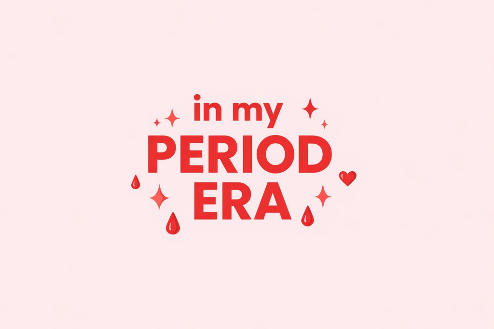

What Is a Period?
A period is monthly bleeding that happens as part of your body’s natural cycle. Each month, your body prepares itself, and if it doesn’t need what it made, it lets it go—and that’s your period. It’s a normal and healthy part of how your body works.

What Could I Feel?
Everyone experiences periods a little differently. Some girls feel more symptoms, while others may feel almost nothing at all. No one’s experience is exactly the same.
You might notice things like:
- Cramps or a heavy feeling in your lower stomach
- Feeling more tired than usual
- Sore muscles or body aches
- Low energy or just not feeling like yourself
- Big emotions or mood changes
- Cravings for certain foods
- Wanting more rest or quiet time
What you feel can change from month to month. All of this is common.
Be gentle with yourself— a little patience goes a long way.
Myth: You should hide your period. Fact: Your period is a natural part of your body’s process. There’s no need to feel ashamed or embarrassed.
When Do Periods Start?
A first period usually starts sometime between ages 9 and 16. Everyone’s body has its own timing, so it might happen earlier or later than someone else you know. That difference is completely normal. Starting earlier or later doesn’t define you. If you ever feel unsure or have questions, a trusted adult or healthcare provider can help you understand what’s normal for your body.
You’re not alone in this, even if it feels new or confusing. Every girl goes through it in her own way.
What’s a cycle like?
A period is part of a cycle your body goes through each month. Here’s a simple way to understand it:
-
This is when bleeding happens. It usually lasts about 3–7 days.
-
Your body is resting and resetting after your period.
-
About once a month, your next period begins again.
Your body is learning its own pattern, and it’s okay if it takes time.
Want to keep going?
There’s more soft, practical info waiting whenever you’re ready.